Texto extraído da edição fornecida, sem atualização normativa. Consulte a página original para conferir tabelas, formulários e instruções ilustradas. A numeração dos links corresponde à página do arquivo PDF.
Apresentação
PDF · p. 1Esta página contém conteúdo gráfico. Consulte a reprodução original abaixo.
DIEx de proposta
PDF · p. 2ANEXO AO CADERNO DE ORIENTAÇÃO (DAP-06.022)
DIEx-Proposta de Conversão de Tempo Especial em Comum de Serviço de Servidor Civil
MINISTÉRIO DA DEFESA
EXÉRCITO BRASILEIRO
(escalões hierárquicos até a OM expedidora)
(Denominação histórica)
DIEx nº
EB: 00000.000000/0000-00
Local e data
Do Comandante, Chefe ou Diretor da OM
Ao Sr Diretor de Assistência ao Pessoal
Assunto: Conversão de Tempo de Atividade Especial em Comum – SC (NOME)
Anexo: 1 (um) processo de Conversão de Tempo Especial em Comum com ___ folhas no AFD
1. Trata este expediente de encaminhar o processo de Conversão de Tempo Especial em Comum (nome
do servidor), matrícula SIAPE nº _______________.
2. Encaminho o processo anexo no Assentamento Funcional Digital (AFD), do interesse do servidor
acima citado, ocupante da (categoria funcional, código, classe, padrão e nível), do Quadro de Pessoal
do Comando do Exército, lotado na (OM) para as devidas providências.
_________________SPED_________________
Nome e assinatura
Cmt, Ch ou Dir da OM
Ver página original — tabelas, imagens e diagramas
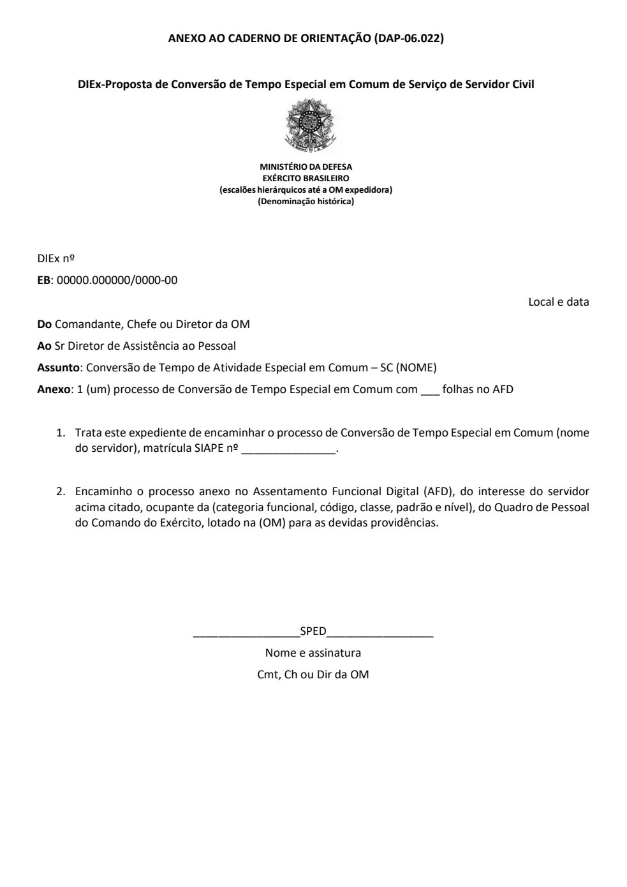
Modelo de processo
PDF · p. 3MODELO DE PROCESSO DE CONVERSÃO DE TEMPO ESPECIAL EM COMUM
PROTOCOLO GERAL
N° EB (GERAR NUMERAÇÃO NO SPED)
MINISTÉRIO DA DEFESA
EXÉRCITO BRASILEIRO
DESTINO DATA DESTINO DATA
1 7
2 8
3 9
4 10
5 11
6 12
MOVIMENTAÇÃO DO PROCESSO
INTERESSADO: (Nome do Servidor/Mátricula SIAPE)
ASSUNTO: CONVERSÃO DE TEMPO ESPECIAL EM COMUM
ORGANIZAÇÃO MILITAR: XX
PARA
DIRETORIA DE ASSISTÊNCIA AO PESSOAL
Processo restituído para correção: SIM ( ) NÃO ( )
Caso afirmativo, informar os DIEx que foram
restituídos pela DAP:
1)
2)
Ver página original — tabelas, imagens e diagramas
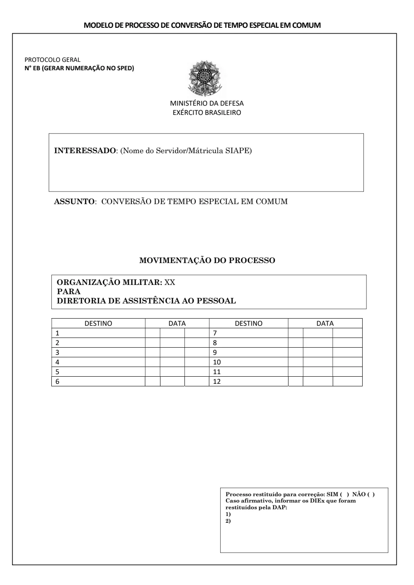
Lista de documentos
PDF · p. 4MINISTÉRIO DA DEFESA
EXÉRCITO BRASILEIRO
(escalões hierárquicos até a OM expedidora)
(Denominação histórica)
CHECK-LIST DE DOCUMENTOS PARA PROCESSO
Processo nº: _____________________
Servidor: _______________________________________
Data: _____/_____/________
Responsável pela conferência: _____________________
Documentos básicos, de identificação, comprovação de tempo de serviço e atividade especial:
I. Termo de Abertura
II. Requerimento
III. Informação do Requerimento
IV. Declaração de Vedações Legais
V. Mapa de Tempo de Serviço
VI. Quadro demonstrativo de Licenças, Suspensões e Faltas
VII. CNIS (Cadastro Nacional de Informações Sociais) (Quando for INSS)
VIII. Relação das bases de cálculo de contribuição (Estado e Municipios)
IX. CTC (Certidão de Tempo de Contribuição) (INSS ou Anexo IX da Portaria 1.467 de 02JUN22)
X. LTCAT (Laudo Técnico das Condições Ambientais de Trabalho) (Portaria nº 10.360 de 06 de dezembro de
2022)
XI. Portaria de Localização
XII. Portaria de Designação do Servidor para operar com raios x e substâncias radioativas, (na forma do
decreto nº 81.384, de 22 de fevereiro de 1978, quando for o caso)
XIII. Declaração de Tempo de Atividade Especial
XIV. PPP (Perfil Profissiográfico Previdenciário)
XV. RG
*Assinatura Eletrônica em todos os documentos
*Incluir o Processo em formato OCR/PDF no Assentamento Funcional Digital (AFD)
Ver página original — tabelas, imagens e diagramas
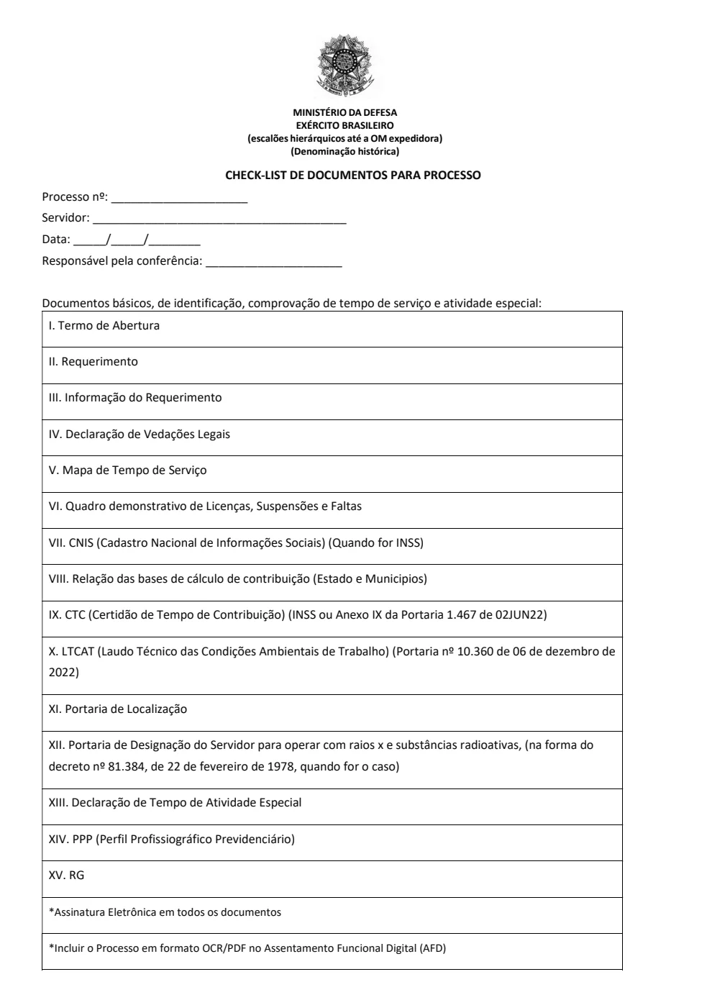
Termo de abertura
PDF · p. 5I. TERMO DE ABERTURA
MINISTÉRIO DA DEFESA
EXÉRCITO BRASILEIRO
(escalões hierárquicos até a OM expedidora)
(Denominação histórica)
TERMO DE ABERTURA DE PROCESSO
Aos (data de abertura), procedeu-se à abertura do Processo EB nº XXXXX.XXXXXX/XXXX-XX, com este fim, e para
constar, eu, (POSTO/NOME COMPLETO) lavrei o presente termo que vai por mim assinado, tendo por objetivo
encaminhar o processo de conversão de tempo especial em comum.
Cidade-UF, data de abertura
CARGO/FUNÇÃO/OM (NOME COMPLETO DO RESPONSÁVEL)
MATRÍCULA SIAPE OU PREC-CP:
Assinatura
Digital:
Ver página original — tabelas, imagens e diagramas
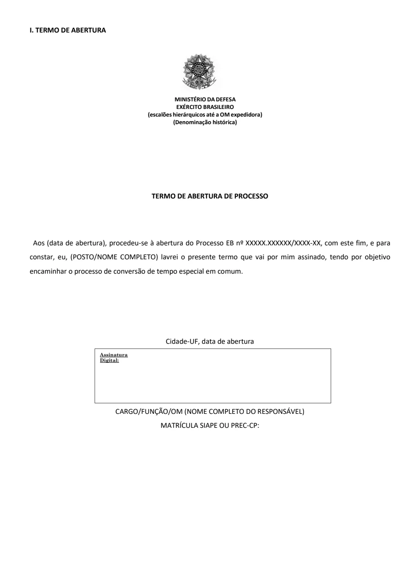
Requerimento
PDF · p. 6II. REQUERIMENTO
MINISTÉRIO DA DEFESA
EXÉRCITO BRASILEIRO
(escalões hierárquicos até a OM expedidora)
(Denominação histórica)
Requerimento
EB: 00000.000000/0000-00
Do (nome do servidor civil)
Ao OM de Vinculação
Objeto: Conversão de Tempo Especial em Comum.
1. (nome do servidor), matrícula SIAPE nº ___________, categoria funcional, código XX, classe XX, padrão
XX e nível XX, lotado na (OM), requer a conversão de tempo especial em comum.
2. Tal solicitação encontra amparo na Lei de nº 8.112, de 11 dezembro de 1990, Portaria MTP nº 1.467,
de 2 junho de 2022 e Portaria SGP/SEDGG/ME nº 10.360, de 6 de dezembro de 2022.
3. Declaro estar ciente de que este requerimento de averbação de tempo de serviço/contribuição deverá
ser apresentado em tempo hábil, para fins de concessão de abono de permanência ou aposentadoria.
4. Anexos.
5. É a primeira (segunda ou terceira) vez que requer.
Nestes termos, pede deferimento.
(Local e data)
Assinatura Digital/ ou SPED do requerente
(Nome Completo do Servidor e Matrícula SIAPE)
Ver página original — tabelas, imagens e diagramas
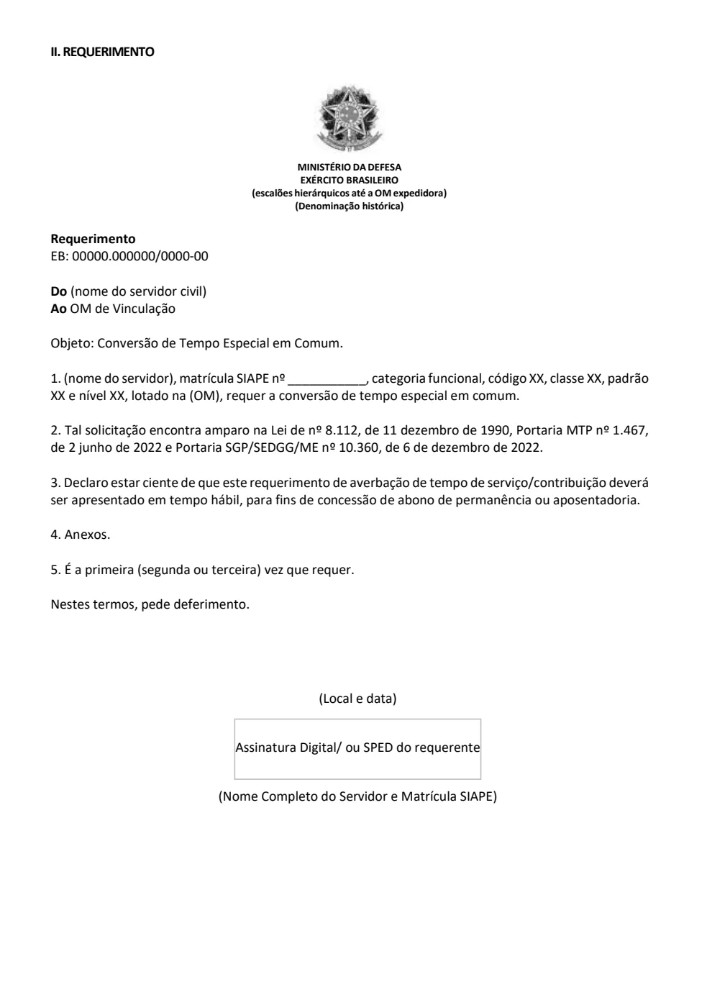
Informação
PDF · p. 7III. INFORMAÇÃO DO REQUERIMENTO
MINISTÉRIO DA DEFESA
EXÉRCITO BRASILEIRO
(escalões hierárquicos até a OM expedidora)
(Denominação histórica)
Info nº
Do Cmt, Ch, Dir da OM
Ao Sr Diretor de Assistência ao Pessoal
Assunto: Conversão de Tempo Especial em Comum.
1. Requerimento em que o servidor (nome do servidor), matrícula SIAPE nº _________________,
categoria funcional, código, classe, padrão e nível, lotado na (OM), pleiteia conversão de tempo especial
em comum.
2. INFORMAÇÃO
a) Amparo do Requerente;
b) Dados informativos sobre o requerente:
c) Data de nascimento;
d) Data de entrada em efetivo exercício no Exército;
e) Data de ingresso de efetivo exercício no atual cargo, quando se tratar de servidor redistribuído ou
transferido de outro órgão público;
f) Tempo trabalhado em atividade do magistério do ensino básico, técnico e tecnológico (e/ou
equivalente) expressamente ratificado no escopo da Certidão de Tempo de Contribuição no campo
Função (ou equivalente);
g) Licenças e afastamentos condizente com as informações previamente lançadas no Sistema de Gestão
de Pessoas (SIGEPE), Módulo Afastamento;
h) Contribuições previdenciárias do item. “f”);
i) Trabalho em condições de exposições de agentes nocivos à saúde (Adicional de Insalubridade e/ou
Periculosidade), se for o caso de atividade especial;
j) Cadastro Nacional de Informações Sociais (CNIS);
k) Mapa de Tempo de Serviço a ser averbado;
l) Declaração de Vedações Legais;
m) Relação de Bases de Cálculo das Contribuições, se for o caso;
n) Laudo Técnico das Condições do Ambiente de Trabalho (LTCAT) do item. “i”);
o) Períodos por meio da Declaração da Atividade Especial (DTAE) do Item. “i”);
p) Portaria de Localização condizente com o Item, se for o caso de atividade especial. “i”);
q) Portaria de Concessão ou Designação do item. “i”); e
r) Perfil Profissiográfico Previdenciário (PPP) do item. “i”).
Ver página original — tabelas, imagens e diagramas
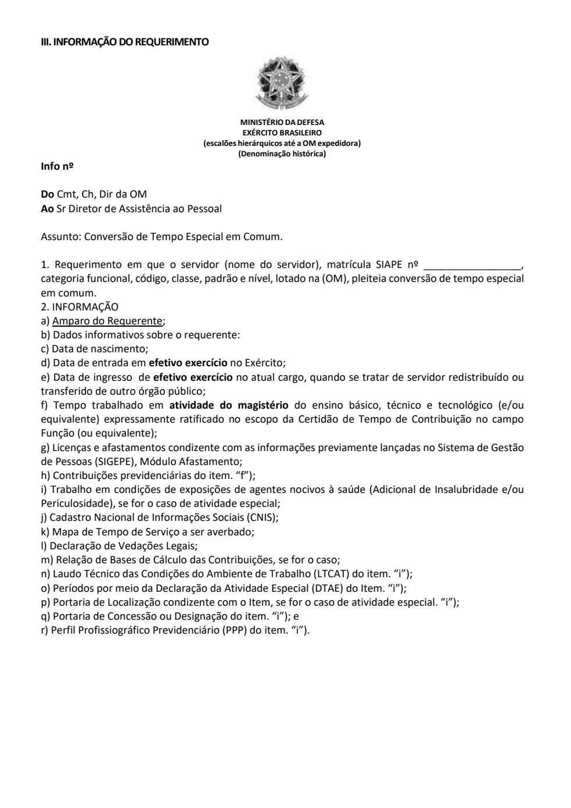
Informação
PDF · p. 8O requerente pleiteia averbação de tempo de contribuição previdênciaria e/ou conversão de tempo
especial em comum, havendo coerência entre o que solicita e o dispositivo citado como amparo na letra
“a”, da presente informação.
3. Parecer do Servidor:
(Assinatura Digital/Certificado Digital)
(Nome Completo do Servidor e Matrícula SIAPE)
4. O presente requerimento permaneceu ______ dia(s) nesta OM para fins de informação e
encaminhamento.
(Assinatura Digital/Certificado Digital)
(Cmt, Ch ou Dir da OM)
(Posto/Nome Completo/OM)
Ver página original — tabelas, imagens e diagramas
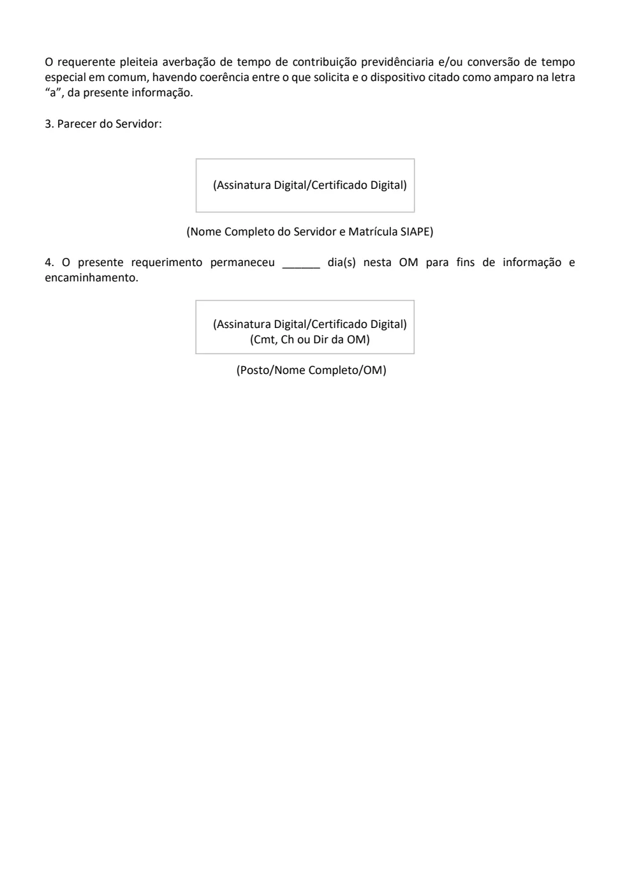
Vedações legais
PDF · p. 9IV. DECLARAÇÃO DE VEDAÇÕES LEGAIS
MINISTÉRIO DA DEFESA
EXÉRCITO BRASILEIRO
(escalões hierárquicos até a OM expedidora)
(Denominação histórica)
DECLARAÇÃO DE VEDAÇÕES PARA AVERBAÇÃO DE TEMPO DE CONTRIBUIÇÃO
Eu, __________________________________________, matrícula SIAPE nº ____________, CPF nº
__________________, servidor(a), categoria funcional: código XX, classe XX, padrão XX e nível XX,
lotado na (OM), declaro, para os devidos fins, em conformidade com a Lei nº 8.112, de 11 de dezembro
de 1990, que:
1. Os períodos apresentados para averbação de tempo de contribuição não foram utilizados em outro
órgão ou entidade, pública ou privada, para fins de contagem recíproca ou concessão de benefício
previdenciário;
2. Não exerço, nem exerci, cargos, empregos ou funções públicas não acumuláveis com o cargo instituidor
da averbação de tempo de contribuição, nos termos do art. 118 da Lei nº 8.112/1990 e do art. 37, inciso
XVI, da Constituição Federal, combinado com a Portaria SGP/SEDGG/ME nº 10.360, de 6 dezembro de
2022.
3. Estou ciente de que é vedada a desaverbação de tempo de serviço ou contribuição que já tenha gerado
benefício administrativo ou previdenciário, conforme disposto na legislação aplicável.
4.Declaro, ainda, estar ciente de que a veracidade das informações ora prestadas é de minha inteira
responsabilidade, sujeitando-me às penalidades administrativas, civis e criminais cabíveis, na forma da
legislação vigente.
(Local e data)
Assinatura Digital do servidor
(Nome Completo do Servidor e Matrícula SIAPE)
Ver página original — tabelas, imagens e diagramas
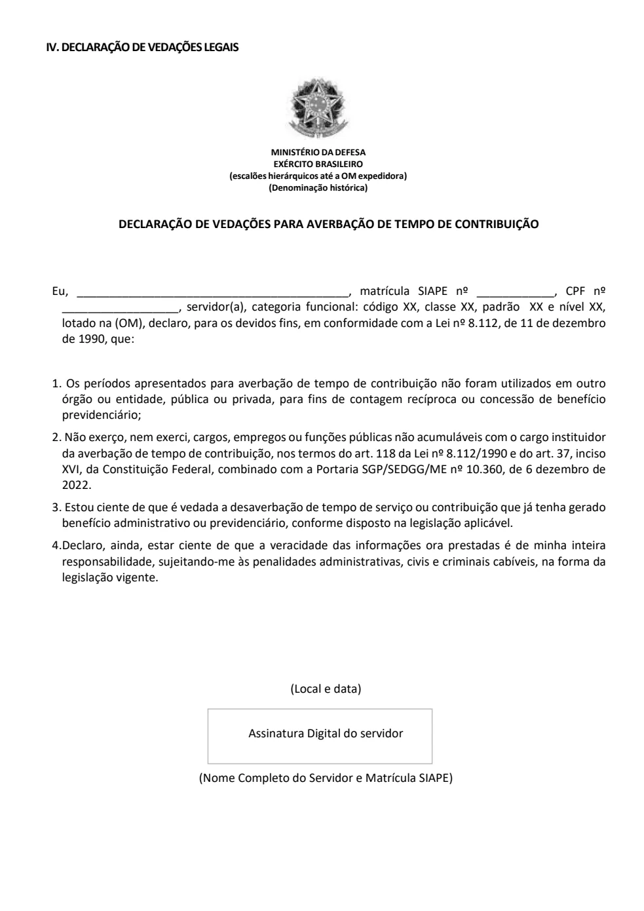
Mapa de tempo de serviço
PDF · p. 10V. MAPA DE TEMPO DE SERVIÇO
MINISTÉRIO DA DEFESA
EXÉRCITO BRASILEIRO
(escalões hierárquicos até a OM expedidora)
(Denominação histórica)
MAPA DE TEMPO DE SERVIÇO PARA CONVERSÃO DE ATIVIDADE ESPECIAL EM COMUM
DETALHAMENTO DO TEMPO DE ATIVIDADE ESPECIAL A SER CONVERTIDO EM TEMPO COMUM NO REGIME
PRÓPRIO DE PREVIDÊNCIA SOCIAL DA UNIÃO (RPPS)
DESIGNAÇÃO DISPENSA
ÓRGÃO/EMPRESA Nº ATO DATA VIGÊNCIA Nº ATO DATA VIGÊNCIA
TEMPO
APROVEITADO EM
DIAS
TOTAL
DETALHAMENTO DO TEMPO A SER AVERBADO NO REGIME PRÓPRIO DE PREVIDÊNCIA SOCIAL DA UNIÃO
(RPPS)
ÓRGÃO/ENTIDADE PROTOCOLO/NIT DATA DO
INGRESSO
DATA DA
DISPENSA
REGIME
PREVIDENCIÁRIO
TEMPO APROVEITADO EM
DIAS
TOTAL
______________________________________
Local e data
(Assinatura Digital/Certificado Digital) (Assinatura Digital/Certificado Digital)
NOME COMPLETO NOME COMPLETO
ENCARREGADO (A) DE PESSOAL COMANDANTE / DIRETOR / CHEFE
Ver página original — tabelas, imagens e diagramas
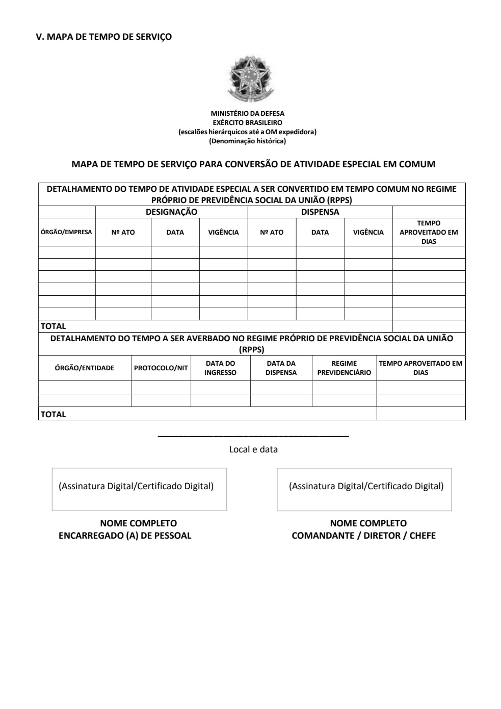
Licenças, suspensões e faltas
PDF · p. 11VI. QUADRO DEMONSTRATIVO DE LICENÇAS, SUSPENSÕES E FALTAS
MINISTÉRIO DA DEFESA
EXÉRCITO BRASILEIRO
(escalões hierárquicos até a OM expedidora)
(Denominação histórica)
QUADRO DEMONSTRATIVO DE LICENÇAS, SUSPENSÕES E FALTAS
NOME DO SERVIDOR:
DISCRIMINAÇÃO DAS LICENÇAS, SUSPENSÕES, FALTAS E FUNDAMENTO LEGAL
ANO DIAS
INFORMAR DIAS
DEDUTÍVEIS
(S/N)
LICENÇAS,
SUSPENSÕES E
FALTAS
PERÍODO FUNDAMENTO
LEGAL
______________________________________
Local e data
(Assinatura Digital/Certificado Digital) (Assinatura Digital/Certificado Digital)
NOME COMPLETO NOME COMPLETO
ENCARREGADO (A) DE PESSOAL COMANDANTE / DIRETOR / CHEFE
Ver página original — tabelas, imagens e diagramas
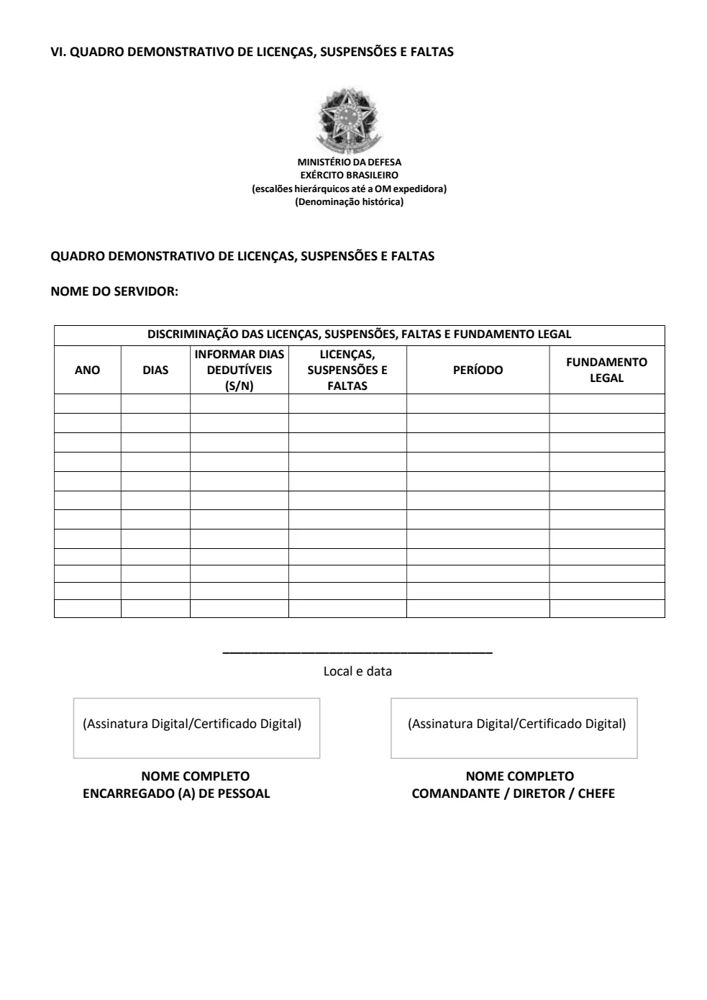
CNIS
PDF · p. 12VII. CADASTRO NACIONAL DE INFORMAÇÕES SOCIAIS DO INSS (CNIS)
CNIS DO INSS
Modelo ilustrativo:
OBSERVAÇÕES:
1. Verificar se o tempo informado no mapa de tempo de serviço está lançado a data início e fim na CNIS
de cada período;
2. Conferir se todos os meses informados de todos os tempos de competência previdenciários para
averbação, corresponde com os meses descriminados na CNIS.
Ver página original — tabelas, imagens e diagramas
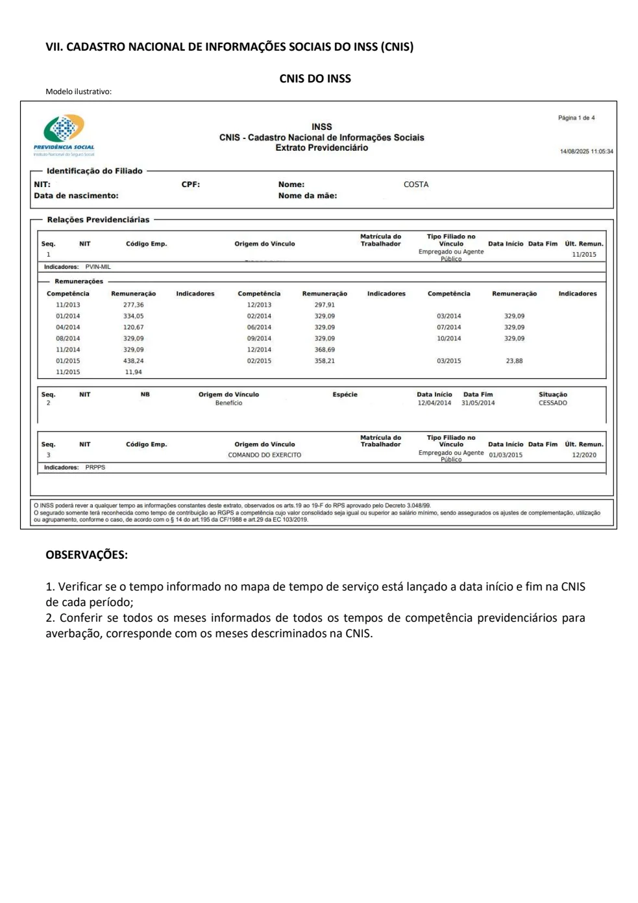
Bases de cálculo
PDF · p. 13VIII. RELAÇÃO DAS BASES DE CÁLCULO DE CONTRIBUIÇÃO DE RPPS DIVERSOS
MINISTÉRIO DA DEFESA
EXÉRCITO BRASILEIRO
(escalões hierárquicos até a OM expedidora)
(Denominação histórica)
RELAÇÃO DAS BASES DE CÁLCULO DE CONTRIBUIÇÃO
REFERENTE À CERTIDÃO DE TEMPO DE CONTRIBUIÇÃO Nº _______, de ___/___ /_____.
ÓRGÃO EXPEDIDOR: CNPJ:
NOME DO SERVIDOR: MATRÍCULA:
NOME DA MÃE: DATA DE
NASCIMENTO:
DATA DE INÍCIO DA
CONTRIBUIÇÃO/ADMISSÃO:
DATA DA EXONERAÇÃO: PIS/PASEP CPF:
Mês Ano: Ano: Ano: Ano: Ano:
Valor Valor Valor Valor Valor
JANEIRO
FEVEREIRO
MARÇO
ABRIL
MAIO
JUNHO
JULHO
AGOSTO
SETEMBRO
OUTUBRO
NOVEMBRO
DEZEMBRO
13º SALÁRIO OU
GRATIFICAÇÃO
NATALINA
LOCAL e DATA: CARIMBO, MATRÍCULA E ASSINATURA DO
RESPONSÁVEL:
UNIDADE GESTORA DO RPPS
OBSERVAÇÕES:
1. Quando for contribuições Federal, Estados, Municípios e Militar a partir de Julho de 1994, informar as
remunerações de cada mês contribuído, conforme os períodos da CTC, caso não tenha os dados na
respecitva Certidão do RPPS.
HOMOLOGO o presente documento e declaro que as informações nele constantes correspondem com a verdade. Local e data: Assinatura do Comandante da OM
Ver página original — tabelas, imagens e diagramas
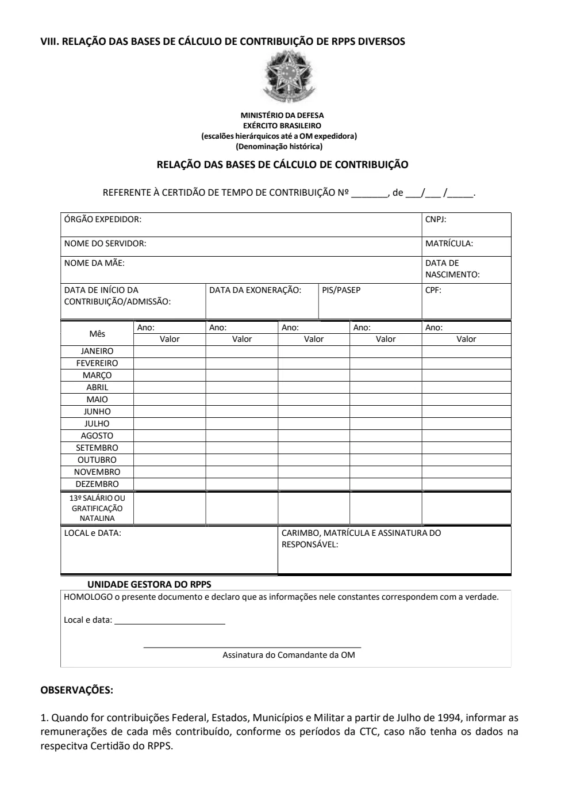
Certidões de tempo
PDF · p. 14IX. TIPOS DE CERTIDÕES DE TEMPO DE CONTRIBRUIÇÃO – CTC
a. CERTIDÃO DE TEMPO DE CONTRIBUIÇÃO DO INSS;
b. CERTIDÃO DE TEMPO DE CONTRIBUIÇÃO DO ESTADO;
c. CERTIDÃO DE TEMPO DE CONTRIBUIÇÃO DO MUNICÍPIO; e
d. CERTIDÃO DE TEMPO DE SERVIÇO/CONTRIBUIÇÃO MILITAR.
Modelo ilustrativo:
OBSERVAÇÕES:
1. Em caso de atividades do magistério, deve constar na CTC do INSS a informação atividade do
Magistério ou equivalente no Campo;
2. Quando for contribuições dos Estados e Municípios, deverá constar as informações das remunerações
de competência dos meses contribuídos, conforme os períodos da CTC, caso não tenha os dados na
Certidão do RPPS Diversos;
3. Constar data de inicio e fim dos períodos de contribuições a ser aproveitados;
4. Observar os modelos para emissão da CTC de acordo com a Portaria 1.467 de 02 de junho de 2022.
5. Se Contribuição Prestado à Administração Pública Federal - Certidão original emitida pelo órgão
federal, quando se tratar de servidor vinculado ao RJU, ou pela CLT, desde que o respectivo emprego
tenha sido convertido em cargo público em conformidade com o art. 243 da Lei nº 8.112/90.
Ver página original — tabelas, imagens e diagramas
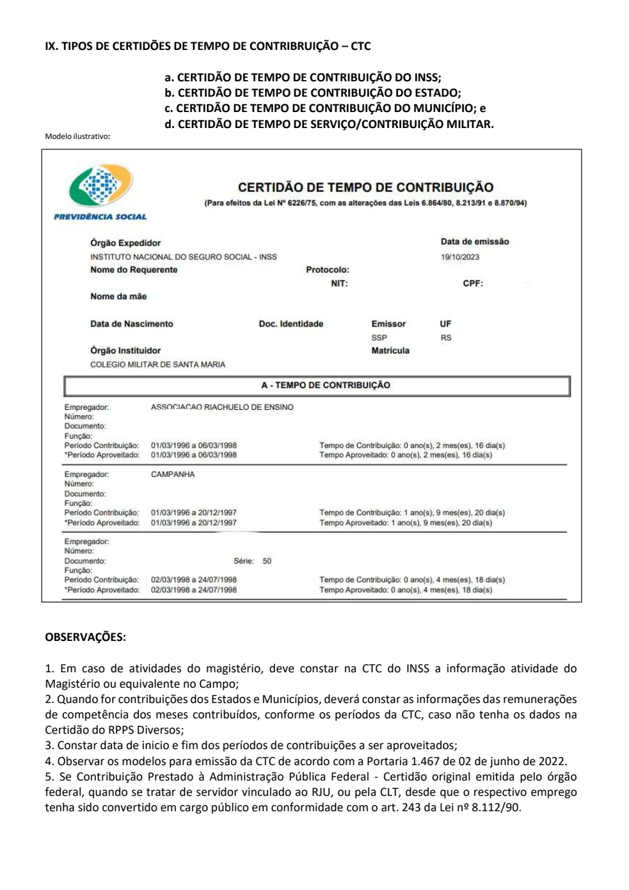
Certidões de tempo
PDF · p. 156. No caso de tempo de serviço/contribuição prestado à Administração Estadual:
a) Certidão original emitida pelo órgão estadual, quando se tratar de tempo proveniente de Autarquias
ou dos Poderes Executivo, Legislativo e Judiciário;
b) Certidão original emitida pela Secretaria de Estado de Recursos Humanos e Administração, quando
for de sua competência, admitindo-se, em qualquer caso, as certidões emitidas pelo órgão ao qual o
servidor estiver vinculado;
c) Certidão original emitida pelo INSS, quando referente a tempo de serviço em Empresas Públicas,
Sociedades de Economia Mista e Fundações.
7. No caso de tempo de serviço/contribuição prestado à Administração Municipal:
a) Certidão original emitida pelo órgão competente do Município, quando houver Regime Próprio de
Previdência Social (RPPS). Na ausência de RPPS, a certidão deverá ser emitida pelo INSS.
8. No caso de tempo de serviço/contribuição prestado às Forças Armadas:
a) Certidão emitida pelas Forças Armadas, no caso de serviço militar obrigatório;
b) Certidão de tempo de contribuição, quando se tratar de serviço militar permanente já transferido
para a reserva não remunerada.
c) Poderá ser aceita cópia do Certificado de Reservista, desde que contenha a expressão “confere com
o original” ou outra equivalente que lhe atribua autenticidade, e que indique expressamente a data de
início e término do serviço;
d) Caso o documento não apresente o período exato de prestação do serviço, será exigida certidão
original emitida pelo órgão em que o servidor cumpriu o Serviço Militar.
9. No caso de tempo de serviço/contribuição prestado como aluno-aprendiz:
a) Certidão original emitida pelo órgão em que o serviço foi prestado, atestando que o aprendiz recebeu
remuneração pela execução de encomendas para terceiros, devendo ser excluídos os períodos de férias
escolares. Para serviços prestados antes de 11/12/1990, a CTC deverá ser encaminhada ao INSS para
certificação no Regime Geral de Previdência Social; e
b) Há possibilidade de contar o tempo de trabalho na qualidade de aluno aprendiz no serviço público
federal, para todos os efeitos, conforme disposto na Súmula nº 96 do TCU, desde que a averbação
atenda aos seguintes critérios abaixo: (item 9.3 do Acórdão nº 2.024/2005 – Plenário TCU e Item 13 da
NOTA TÉCNICA Nº 44-2014-CGNOR-DENOP-SEGEP-MP e NOTA INFORMATIVA Nº 557-2011-CGNOR-
DENOP-SRH-MP).
10. No caso de tempo de serviço na atividade de magistério:
a). Deverá ser apresentado comprovante de que o servidor efetivamente ministrou aulas no ensino de
1º e 2º graus, por meio de cópias dos registros de contratos na Carteira de Trabalho ou por Declarações
expedidas pelo órgão competente.
11. Informar as contribuições dos períodos solicitados para averbamento.
Ver página original — tabelas, imagens e diagramas
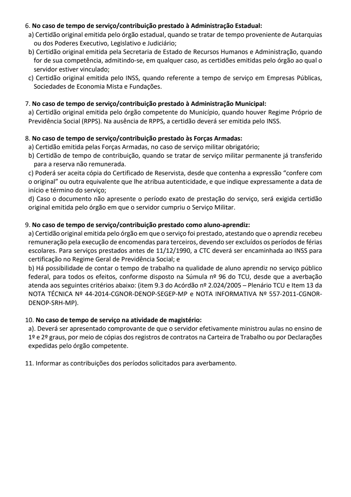
LTCAT
PDF · p. 16X. LAUDO TÉCNICO DE CONDIÇÕES AMBIENTAIS DO TRABALHO – LTCAT
1. O Laudo Técnico das Condições do Ambiente de Trabalho (LTCAT), completo e atualizado,
digitalizado na íntegra do original em formato OCR/PDF, com definição, não sendo aceitas
transcrições, trechos ou excertos.
Portaria nº 10.360 de 06 de dezembro de 2022
Anexo III
2. Art. 6º O LTCAT será elaborado por agente público da esfera federal, estadual, distrital ou
municipal, ou militar, ocupante de cargo público ou posto militar de médico com especialização
em medicina do trabalho, ou de engenheiro ou de arquiteto com especialização em segurança
do trabalho.
3. Art. 7º Poderão ser aceitos em substituição ao LTCAT, ou ainda de forma complementar a este, os
seguintes documentos:
I - laudos técnico-periciais emitidos por determinação da Justiça do Trabalho, em ações
trabalhistas, acordos ou dissídios coletivos;
II - laudos emitidos pela Fundacentro;
III - laudos emitidos pelo Ministério do Trabalho e Previdência - MTP ou pelas delegacias Regionais
do Trabalho - DRT; e
IV- laudos técnicos individuais acompanhados de:
a) autorização escrita do órgão administrativo competente, se o levantamento ambiental ficar a
cargo de responsável técnico integrante dos quadros funcionais de outra esfera de Poder da União
ou de governo;
b) cópia do documento de habilitação profissional do engenheiro de segurança do trabalho ou
médico do trabalho, indicando sua especialidade; e
c) nome e identificação do servidor da Administração responsável pelo acompanhamento do
levantamento ambiental, quando a emissão do laudo técnico ficar a cargo de servidor público
pertencente aos quadros funcionais de outras esferas de governo ou Poder; e
d) data e local da realização da perícia.
V- demonstrações ambientais quando constantes dos seguintes documentos:
a) Programa de Prevenção de Riscos Ambientais - PPRA;
b) Programa de Gerenciamento de Riscos - PGR;
c) Programa de Condições e Meio Ambiente de Trabalho na Indústria da
Construção - PCMAT;
d) Programa de Controle Médico de Saúde Ocupacional - PCMSO.
Ver página original — tabelas, imagens e diagramas
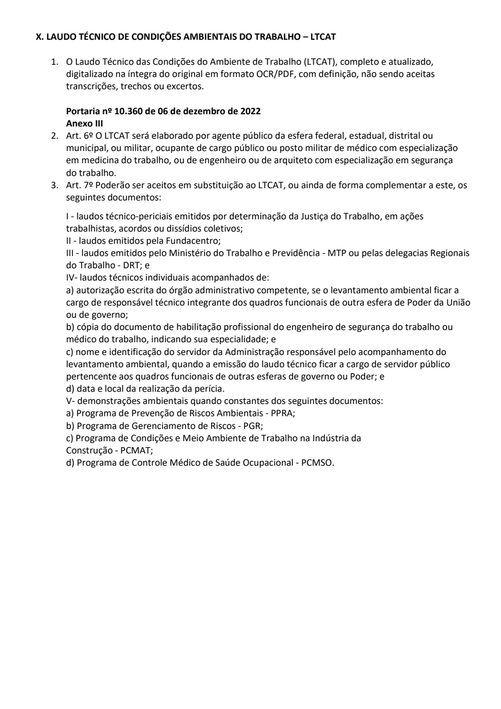
Portarias
PDF · p. 17XI. PORTARIA DE LOCALIZAÇÃO
MINISTÉRIO DA DEFESA
EXÉRCITO BRASILEIRO
(escalões hierárquicos até a OM expedidora)
(Denominação histórica)
PORTARIA DE LOCALIZAÇÃO (INSALUBRIDADE/PERICULOSIDADE)
Portaria de Localização nº / (ano)
O(a) Comandante/Chefe/Diretor (adaptar) da (o) (Organização Militar), utilizando das atribuições que lhe confere a
Portaria nº / , Publicada em Boletim Interno nº de / / , RESOLVE:
Localizar o servidor (a) , matrícula SIAPE nº ,
CPF , ocupante do cargo de , em exercício nesta OM, com a carga horária de trabalho de
horas semanais (aproximadamente 40h), que está atualmente realizando as atividades
relacionadas na Tabela abaixo.
TABELA DE ATIVIDADES
Detalhamento das atividades
Duração das Atividades
Frequência
Descrição detalhada da atividade
Data de início da atividade (dia, mês e ano)
Quantidade de horas para o desempenho da atividade
Diariamente: executa a atividade rotineiramente . (marcar x)
Semanalmente: executa a atividade às vezes .
Relatar a frequência semanal que a atividade é repetida.
Mensalmente:
executa a
atividade raramente. Relatar a frequência mensal que a atividade é repetida.
1-
2-
3-
4-
5-
Estou ciente de que o direito ao adicional de insalubridade ou periculosidade cessa com a eliminação das condições ou dos riscos
que deram causa a sua concessão. Sendo meu dever informar a interrupção, alteração da frequência ou qualquer outra
modificação das atividades desenvolvidas pelo servidor supra citado à OM, conforme orienta a legislação.
Declaro, sob as penas da Lei, que as informações prestadas acima são verdadeiras e que irregularidades ou desatualizações das
mesmas podem acarretar em responsabilidade civil, penal e administrativa.
Nome Cmt, Ch ou Dir da OM
PUBLICAÇÃO EM BOLETIM INTERNO: N° / DATA:
Assinatura
Ver página original — tabelas, imagens e diagramas
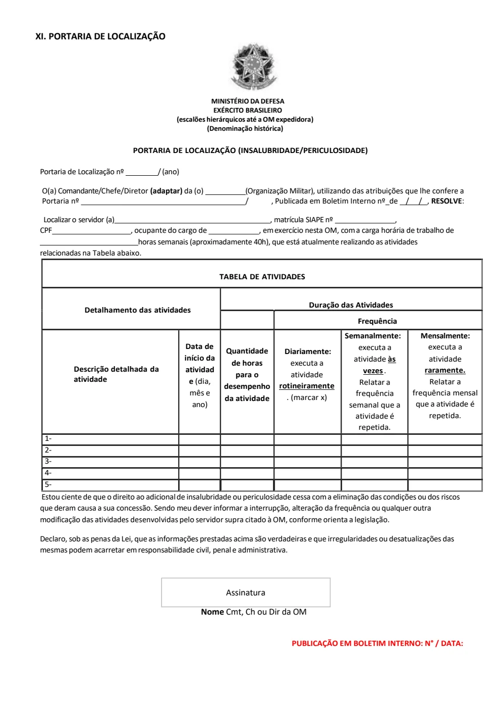
Portarias
PDF · p. 18XII. PORTARIA DE DESIGNAÇÃO DO SERVIDOR PARA OPERAR COM RAIOS X E SUBSTÂNCIAS
RADIOATIVAS, (na forma do decreto nº 81.384, de 22 de fevereiro de 1978, quando for o caso)
MINISTÉRIO DA DEFESA
EXÉRCITO BRASILEIRO
(escalões hierárquicos até a OM expedidora)
(Denominação histórica)
PORTARIA nº , DE DE DE 20 .
EB: 00000.000000/0000 - 00
O (COMANDANTE, DIRETOR OU CHEFE DA OM), no uso da competência que lhe foi subdelegada
pelo art. 2º, inciso X, da Portaria - DGP/C Ex nº 458, de 10 de agosto de 2023, publicada no BE nº 33, de 18 de
agosto de 2023 e, considerando o Decreto nº 81.384, de 22 de fevereiro de 1978, alterado pelo Decreto nº 84.106,
22 de outubro de 1979, e ainda, Portaria MTP nº 1.467 de 02 de junho de 2022 e Portaria SGP/SEDGG/ME nº
10.360 de 06 de dezembro de 2022, resolve:
Art. 1º Designar a contar de de de 20 , o(s) servidor(es)
para operar(em) com raios X ou
substâncias radioativas, por um período mínimo de doze horas semanais.
Art. 2º Conceder - lhe (s) a gratificação por atividades com raios X ou substâncias radioativas, no
percentual de 10% (dez por cento), incidente sobre o respectivo vencimento básico.
Art. 3º Determinar que esta portaria entre em vigor na data de sua publicação.
Nome Cmt, Ch ou Dir da OM
PUBLICAÇÃO EM BOLETIM INTERNO: N° / DATA:
Assinatura
Ver página original — tabelas, imagens e diagramas
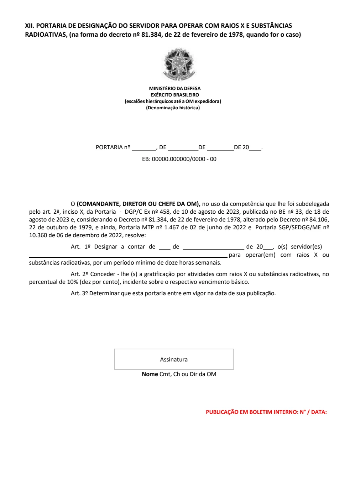
Declaração de atividade especial
PDF · p. 19XIII. DECLARAÇÃO DE ATIVIDADE ESPECIAL
MINISTÉRIO DA DEFESA
EXÉRCITO BRASILEIRO
(escalões hierárquicos até a OM expedidora)
(Denominação histórica)
Declaração de Tempo de Atividade Especial
ÓRGÃO EXPEDIDOR: CNPJ:
NOME DO SERVIDOR: SEXO: MATRÍCULA:
CPF: DATA DE NASCIMENTO:
FILIAÇÃO:
ENDEREÇO:
OCUPAÇÃO EXERCIDA ENQUANTO CELETISTA:
UNIDADE DE LOTAÇÃO/EXERCÍCIO:
DATA DE ADMISSÃO: DATA DE EXONERAÇÃO/REDISTRIBUIÇÃO:
PERÍODO DE CONTRIBUIÇÃO COMPREENDIDO NESTA CERTIDÃO:
DE / / A / /
FONTE DE INFORMAÇÃO:
FREQUÊNCIA
ANO TEMPO
BRUTO
FALTAS
LICENÇAS
LICENÇA SEM
VENCI-
MENTOS
SUSPENSÕES DISPONI-
BILIDADE
OUTRAS TEMPO
LÍQUIDO
TOTAL =
Declaro, que conforme diretrizes do Órgão Central dos Sistemas de Pessoal Civil da Administração Federal (SIPEC)
que o interessado conta, de tempo de serviço público prestado sob condições insalubres, penosas e perigosas ou
exercício de atividades com Raio X e substâncias radioativas, o tempo de dias, correspondente a anos,
meses e dias.
Lavrei a Certidão que não contém emendas sem rasuras.
Local e data: Data: / /
NOME COMPLETO NOME COMPLETO
ENCARREGADO (A) DE PESSOAL COMANDANTE / DIRETOR / CHEFE
OBSERVAÇÕES:
1. Devendo o documento ser assinado pelo Dirigente da Organização Militar.
Assinatura Digital
Assinatura Digital
Ver página original — tabelas, imagens e diagramas
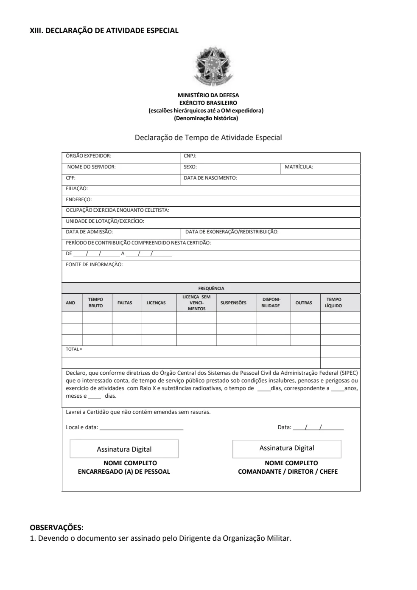
PPP
PDF · p. 20XIV. FORMULÁRIO - PERFIL PROFISSIOGRÁFICO PREVIDENCIÁRIO – PPP
PERFIL PROFISSIOGRÁFICO PREVIDENCIÁRIO - PPP
DADOS ADMINISTRATIVOS
1 - CNPJ do Domicílio Tributário/CEI/CAEPF/CNO 2 - Nome Empresarial 3 - CNAE
4 - Nome do Trabalhador 5 - BR/PDH 6 - CPF
7 - Data de Nascimento 8 - Sexo (F/M) 9 - Matrícula do Trabalhador no
eSocial 10 - Data de Admissão 11 - Regime Revezamento
12 - CAT REGISTRADA
12.1 - Data do Registro 12.2 - Data do Registro 12.1 - Data do Registro 12.2 - Data do Registro
13 - LOTAÇÃO E ATRIBUIÇÃO
13.1 - Período
13.2 -
CNPJ/CEI/
CAEPF/CNO
13.3 - Setor
13.4 - Cargo
13.5 - Função
13.6 - CBO
13.7 - Código GFIP/eSocial
/ / a
/ /
/ / a
/ /
/ / a
/ /
/ / a
/ /
14 - PROFISSIOGRAFIA
14.1 - Período 14.2 - Descrição das Atividades
/ / a
/ /
/ / a
/ /
/ / a
/ /
Ver página original — tabelas, imagens e diagramas
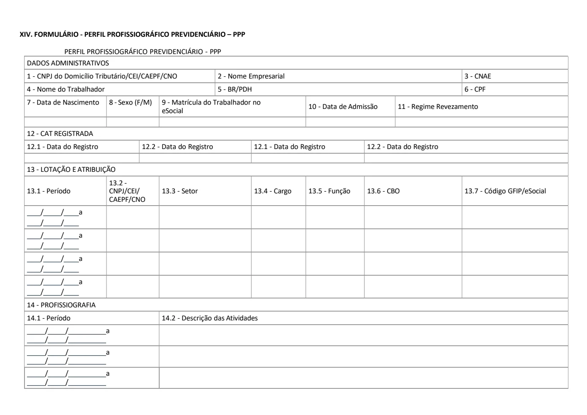
PPP
PDF · p. 21/ / a / /
REGISTROS AMBIENTAIS
15 - EXPOSIÇÃO A FATORES DE RISCOS
15.1 - Período
15.2
-
Tipo
15.3 -
Fator de
Risco
15.4 -
Intensidade/
Concentração
15.5 -
Técnica
Utilizada
15.6 -
EPC
Eficaz
(S/N)
15.7 -
EPI
Eficaz
(S/N)
15.8
- CA
EPI
15.9 - Atendimento aos requisitos das NR-06 e NR-01 do MTP pelos EPIs
informados (*)
Medida de
Proteção
Condição de
Funcionamento
do EPI
Prazo de
Validade
do EPI
Periodicidade da
Troca do EPI
Higienização
do EPI
/ / a
/ /
/ / a
/ /
/ / a
/ /
/ / a
/ /
* Legenda do item 15.9:
Medida de Proteção: Foi tentada a implementação de medidas de proteção coletiva, de caráter administrativo ou de organização do trabalho, optando-se pelo
Equipamento de Proteção Individual - EPI por
inviabilidade técnica, insuficiência ou interinidade, ou ainda em caráter complementar ou emergencial?
Condição de Funcionamento do EPI: Foram observadas as condições de funcionamento e do uso ininterrupto do EPI ao longo do tempo, conforme especificação técnica do
fabricante, ajustada às condições?
Prazo de Validade do EPI: Foi observado o prazo de validade, conforme Certificado de Aprovação - CA do MTP?
Periocidade da Troca do EPI: Foi observada a periodicidade de troca definida pelos programas ambientais, comprovada mediante recibo assinado pelo usuário em época
própria?
Higienização do EPI: Foi observada a higienização?
16. RESPONSÁVEL PELOS REGISTROS AMBIENTAIS
Ver página original — tabelas, imagens e diagramas
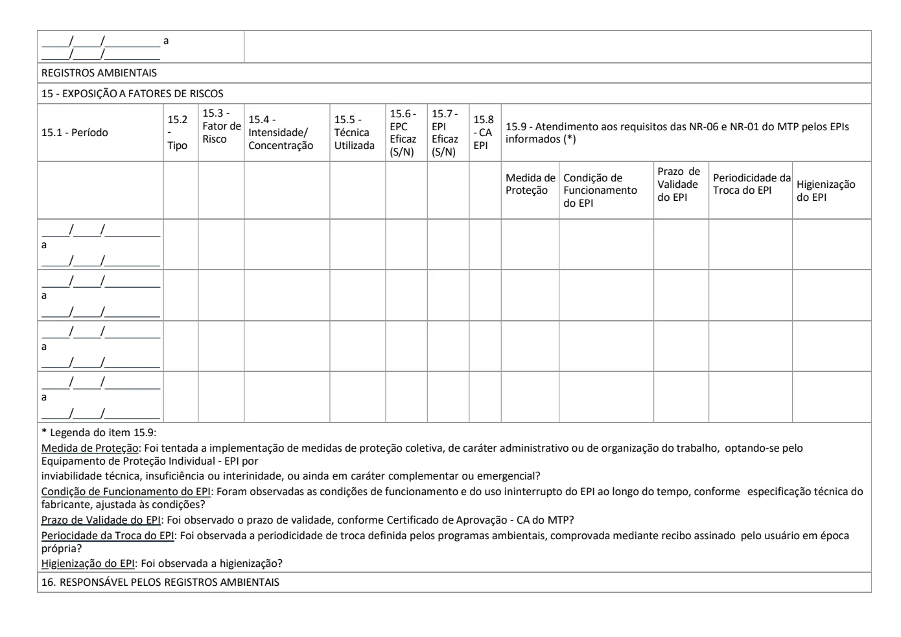
PPP
PDF · p. 2216.1 - Período
16.2 - CPF 16.3 Registro
Conselho de
Classe
16.4 Nome do profissional legalmente habilitado
/ / a
/ /
/ / a
/ /
/ / a
/ /
/ / a
/ /
RESPONSÁVEIS PELAS INFORMAÇÕES
Declaramos, para todos fins de direito, que as informações prestadas neste documento são verídicas e foram transcritas fielmente dos registros administrativos, das
demonstrações ambientais e dos programas médicos de responsabilidade da empresa. É de nosso conhecimento que a prestação de informações falsas neste documento
constitui crime de falsificação de documento público, nos termos do art. 297 do Código Penal e, também, que tais informações são de caráter privativo do trabalhador,
constituindo crime, nos termos da Lei nº 9.029, de 13 de abril de 1995, práticas discriminatórias decorrentes de sua exigibilidade por outrem, bem como de sua
divulgação para terceiros, ressalvado quando exigida pelos órgãos públicos competentes.
17 - Data da Emissão do PPP 18 - Representante Legal da Empresa
/ / 18.1 - NIT do Representante Legal 18.2 - Nome do Representante Legal
(Assinatura do Comandante da Organização
Militar)
(Assinatura Eletrônica de Médico ou Engenheiro do Trabalho)
OBSERVAÇÕES
Ver página original — tabelas, imagens e diagramas
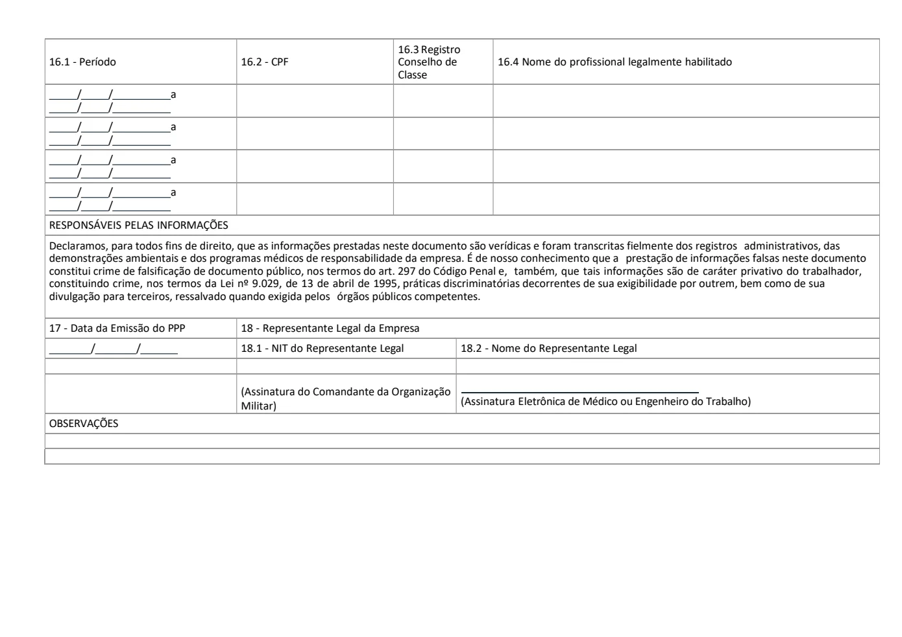
Preenchimento do PPP
PDF · p. 23INSTRUÇÕES DE PREENCHIMENTO DO PPP
CAMPO DESCRIÇÃO INSTRUÇÃO DE PREENCHIMENTO
DADOS ADMINISTRATIVOS
1
CNPJ do Domicílio Tributário/ CEI/
CAEPF/CNO
CNPJ relativo ao estabelecimento escolhido como domicílio tributário, nos termos do art. 127 do CTN, no formato
XXXXXXXX/XXXX-XX; ou
Matrícula no Cadastro Específico do INSS (Matrícula CEI) relativa à obra realizada por Contribuinte
Individual ou ao estabelecimento escolhido como domicílio tributário que não possua CNPJ, no formato XX.XXX.XXXXX/XX,
ambos compostos por caracteres numéricos; ou
Cadastro das Atividades Econômicas das Pessoas Físicas (CAEPF) ou Cadastro Nacional de Obras (CNO) do empregador
no formato, respectivamente, XXX.XXX.XXX/XXX-XX e XX.XXX.XXXXX/XX.
2 NOME EMPRESARIAL Até quarenta caracteres alfanuméricos.
3
CNAE
Classificação Nacional de Atividades Econômicas da Empresa - CNAE, completo, com sete caracteres numéricos, no formato
XXXXXX-X, instituído pelo IBGE por meio da Resolução CONCLA nº 07, de 16 de dezembro de 2002. A tabela de códigos
CNAE - Fiscal pode ser consultada na internet, no
sitewww.cnae.ibge.gov.br
4 NOME DO TRABALHADOR Até quarenta caracteres alfabéticos.
5
BR/PDH
BR - Beneficiário Reabilitado; PDH - Portador de Deficiência Habilitado; NA - Não Aplicável.
Preencher com base no art. 93 da Lei nº 8.213, de 1991, que estabelece a obrigatoriedade do preenchimento dos cargos de
empresas com cem ou mais empregados com beneficiários reabilitados ou pessoas portadoras de deficiência, habilitadas,
na seguinte proporção:
I - até 200 empregados 2%; II - de 201 a 500 3%; III - de 501 a 1.000 4%; IV - de 1.001 em diante 5%.
6 CPF Número de Cadastro da Pessoa Física com onze caracteres numéricos, no formato XXX.XXX.XXX-XX.
7 DATA DO NASCIMENTO No formato DD/MM/AAAA
8 SEXO (F/M) F - Feminino; M - Masculino
9
MATRÍCULA DO
TRABALHADOR NO eSOCIAL
Número único composto pelo código da empresa e pelo número do empregado.
10 DATA DE ADMISSÃO No formato DD/MM/AAAA
11 REGIME DE REVEZAMENTO Regime de Revezamento de Trabalho, para trabalhos em turnos ou escala, especificando tempo trabalhado e tempo de
descanso, com até quinze caracteres alfanuméricos.
Exemplo: 24 x 72 horas; 14 x 21 dias; 2 x 1 meses. Se inexistente, preencher com NA - Não Aplicável.
Ver página original — tabelas, imagens e diagramas
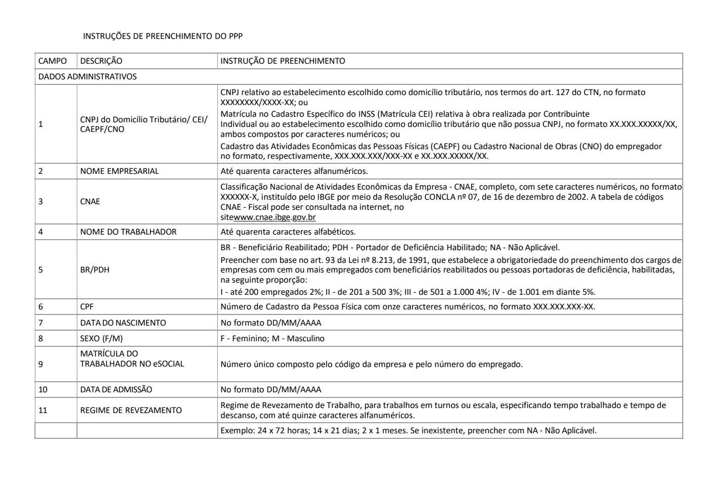
Preenchimento do PPP
PDF · p. 24CAT REGISTRADA
Informações sobre as Comunicações de Acidente do Trabalho registradas pela empresa na Previdência Social, nos
termos do art. 22 da Lei nº 8.213, de 1991, do art. 169 da CLT, do art. 336 do RPS, aprovado pelo Decreto nº 3.048, de
1999, do item 7.4.8, alínea "a", da NR-07 do MTP e dos itens 4.3 e 6.1 do Anexo 13-A da NR-15 do MTP, disciplinado
pela Portaria MPAS nº 5.051, de 1999, que aprova o Manual de Instruções para Preenchimento da CAT.
12.1 DATA DO REGISTRO No formato DD/MM/AAAA.
12.2
NÚMERO DA CAT
Com treze caracteres numéricos, com formato XXXXXXXXXX-X/XX.
Os dois últimos caracteres correspondem a um número sequencial relativo ao mesmo acidente, identificado por NIT,
CNPJ e data do acidente.
13
LOTAÇÃO E ATRIBUIÇÃO
Informações sobre o histórico de lotação e atribuições do trabalhador, por período.
A alteração de qualquer um dos campos - 13.2 a 13.7 - implica, obrigatoriamente, a criação de nova linha, com
discriminação do período, repetindo as informações que não foram alteradas.
13.1 PERÍODO Data de início e data de fim do período, ambas no formato DD/MM/AAAA.
No caso de trabalhador ativo, a data de fim do último período não deverá ser preenchida.
13.2
CNPJ/CEI/CAEPF/CNO
Local onde efetivamente o trabalhador exerce suas atividades. Deverá ser informado o CNPJ do estabelecimento de lotação
do trabalhador ou da empresa tomadora de serviços, no formato
XXXXXXXX/XXXX-XX ou Matrícula CEI da obra ou do estabelecimento que não possua CNPJ, no formato
XX.XXX.XXXXX/XX, ou o Cadastro das Atividades Econômicas das Pessoas Físicas (CAEPF), no formato XXX.XXX.XXX/XXX-
XX ou o Cadastro Nacional de Obras (CNO) do empregador no formato XX.XXX.XXXXX/XX.
13.3 SETOR Lugar administrativo na estrutura organizacional da empresa, onde o trabalhador exerce suas atividades laborais, com até
quinze caracteres alfanuméricos.
13.4 CARGO Cargo do trabalhador, constante na CTPS, se empregado ou trabalhador avulso, ou constante no Recibo de Produção e
Livro de Matrícula, se cooperado, com até trinta caracteres alfanuméricos.
13.5
FUNÇÃO Lugar administrativo na estrutura organizacional da empresa, onde o trabalhador tenha atribuição de comando, chefia,
coordenação, supervisão ou gerência. Quando inexistente a função, preencher com NA
- Não Aplicável, com até trinta caracteres alfanuméricos.
13.6
CBO
Classificação Brasileira de Ocupação - CBO vigente à época, com seis caracteres numéricos:
1 - No caso de utilização da tabela CBO relativa a 1994, utilizar a CBO completa com cinco caracteres.
2 - No caso de utilização da tabela CBO relativa a 2002, utilizar a família do CBO com quatro caracteres, completando
com "0" (zero) a primeira posição.
A tabela de CBO pode ser consultada na internet, no sitehttp://cbo.maisemprego.mte.gov.br/cbosite/pages/home.jsf
OBS.: Após a alteração da GFIP, somente será aceita a CBO completa, com seis caracteres numéricos, conforme a nova
tabela CBO relativa a 2002.
13.7 CÓDIGO DE OCORRÊNCIA DA GFIP Código Ocorrência da GFIP para o trabalhador, com dois caracteres numéricos, conforme Manual da GFIP para usuários
do SEFIP.
Ver página original — tabelas, imagens e diagramas
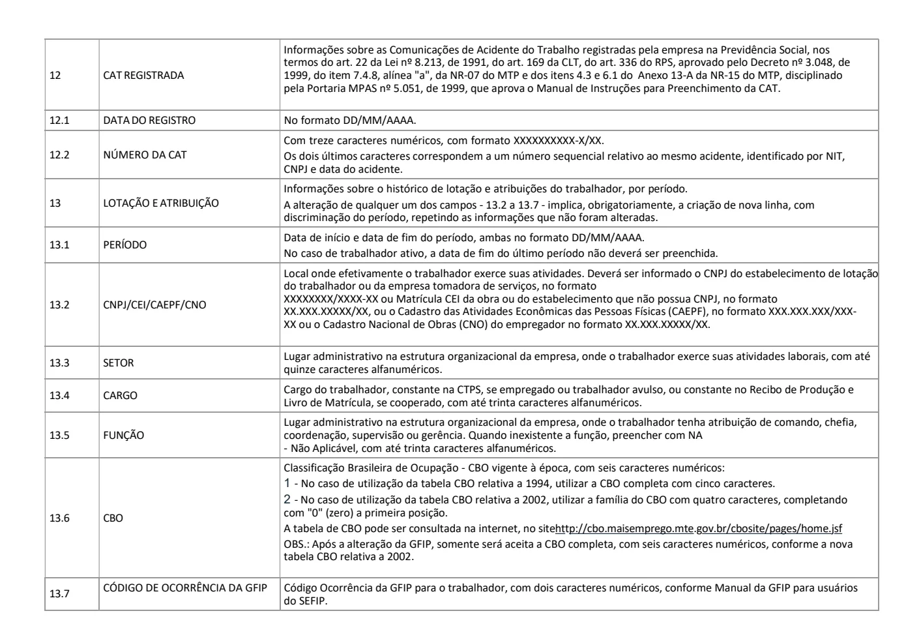
Preenchimento do PPP
PDF · p. 25PROFISSIOGRAFIA
Informações sobre a profissiografia do trabalhador, por período.
A alteração do campo 14.2 implica, obrigatoriamente, a criação de nova linha, com discriminação do período.
14.1 PERÍODO Data de início e data de fim do período, ambas no formato DD/MM/AAAA. No caso de trabalhador ativo, a data de fim
do último período não deverá ser preenchida.
14.2
DESCRIÇÃO DAS ATIVIDADES
Descrição das atividades, físicas ou mentais, realizadas pelo trabalhador, por força do poder de comando a que se
submete, com até quatrocentos caracteres alfanuméricos.
As atividades deverão ser descritas com exatidão e de forma sucinta, com a utilização de verbos no infinitivo impessoal.
REGISTROS AMBIENTAIS
15
EXPOSIÇÃO A FATORES DE RISCOS
Informações sobre a exposição do trabalhador a fatores de riscos ambientais, por período, ainda que estejam
neutralizados, atenuados ou exista proteção eficaz.
Facultativamente, também poderão ser indicados os fatores de riscos ergonômicos e mecânicos. A alteração de
qualquer um dos campos - 15.2 a 15.8 - implica, obrigatoriamente, a criação de nova linha, com discriminação do
período, repetindo as informações que não foram alteradas.
OBS.: Após a implantação da migração dos dados do PPP em meio magnético pela Previdência Social, as informações
relativas aos fatores de riscos ergonômicos e mecânicos passarão a ser obrigatórias.
15.1 PERÍODO Data de início e data de fim do período, ambas no formato DD/MM/AAAA. No caso de trabalhador ativo, a data de fim
do último período não deverá ser preenchida.
15.2
TIPO
F - Físico; Q - Químico; B - Biológico; E
-Ergonômico/Psicossocial, M - Mecânico/de Acidente, conforme classificação adotada pelo Ministério da Saúde, em
"Doenças Relacionadas ao Trabalho: Manual de Procedimentos para os Serviços de Saúde", de 2001.
A indicação do Tipo "E" e "M" é facultativa.
O que determina a associação de agentes é a superposição de períodos com fatores de risco diferentes.
15.3
FATOR DE RISCO
Descrição do fator de risco, com até quarenta caracteres alfanuméricos.
Em se tratando do Tipo "Q", deverá ser informado o nome da substância ativa, não sendo aceitas citações de nomes
comerciais.
15.4 INTENSIDADE / CONCENTRAÇÃO Intensidade ou Concentração, dependendo do tipo de agente, com até quinze caracteres alfanuméricos. Caso o fator de
risco não seja passível de mensuração, preencher com NA - Não Aplicável.
15.5 TÉCNICA UTILIZADA Técnica utilizada para apuração do item 15.4, com até quarenta caracteres alfanuméricos. Caso o fator de
risco não seja passível de mensuração, preencher com NA - Não Aplicável.
15.6
EPC EFICAZ (S/N) S - Sim; N - Não, considerando se houve ou não a eliminação ou a neutralização, com base no informado nos itens 15.2 a
15.5, asseguradas as condições de funcionamento do EPC ao longo do tempo, conforme especificação técnica do
fabricante e respectivo plano de manutenção.
15.7 EPI EFICAZ (S/N) S - Sim; N - Não, considerando se houve ou não a atenuação, com base no informado nos itens 15.2 a 15.5, observado o
disposto na NR-06 do MTP, assegurada a observância*:
Ver página original — tabelas, imagens e diagramas
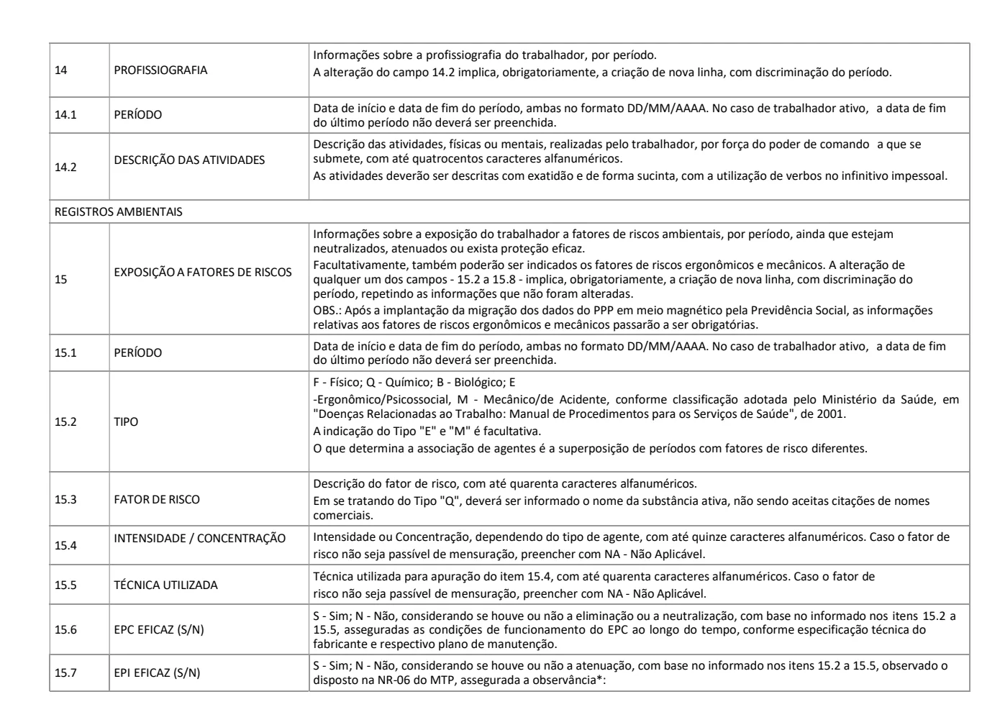
Preenchimento do PPP
PDF · p. 2615.8
C.A. EPI
Número do Certificado de Aprovação do MTP para o Equipamento de Proteção Individual referido no campo 154.7, com
cinco caracteres numéricos.
Caso não seja utilizado EPI, preencher com NA - Não Aplicável.
15.9
ATENDIMENTO AOS REQUISITOS
DAS NR-06 E NR-01 DO MTP
PELOS EPI INFORMADOS
Observação do disposto na NR-06 do MTP, assegurada a observância*:
16 RESPONSÁVEL PELOS
REGISTROS AMBIENTAIS Informações sobre os responsáveis pelos registros ambientais, por período.
16.1 PERÍODO Data de início e data de fim do período, ambas no formato DD/MM/AAAA. No caso de trabalhador ativo, sem alteração
do responsável, a data de fim do último período não deverá ser preenchida.
16.2 CPF Número de Cadastro da Pessoa Física com onze caracteres numéricos, no formato XXX.XXX.XXX-XX.
16.3
REGISTRO CONSELHO DE CLASSE
Número do registro profissional no Conselho de Classe, com nove caracteres alfanuméricos, no formato XXXXXX-X/XX ou
XXXXXXX/XX.
A parte "-X" corresponde à D - Definitivo ou P - Provisório.
A parte "/XX" deve ser preenchida com a UF, com dois caracteres alfabéticos. A parte
numérica deverá ser completada com zeros à esquerda.
16.4 NOME DO PROFISSIONAL
LEGALMENTE HABILITADO Até quarenta caracteres alfabéticos.
RESPONSÁVEIS PELAS INFORMAÇÕES
17 DATA DE EMISSÃO DO PPP Data em que o PPP é impresso e assinado pelos responsáveis, no formato DD/MM/AAAA.
18 REPRESENTANTE LEGAL DA
EMPRESA Informações sobre o Representante Legal da empresa.
18.1 NIT DO REPRESENTANTE LEGAL NIT do representante legal da empresa com onze caracteres numéricos, no formato XXX.XXXXX.XX-X. O NIT
corresponde ao número do PIS/PASEP/CI, sendo que, no caso de CI, pode ser utilizado o número de inscrição no SUS ou na
Previdência Social.
18.2 NOME DO
REPRESENTANTE LEGAL Até quarenta caracteres alfabéticos.
CARIMBO DA EMPRESA E
ASSINATURA DO REPRESENTANTE
LEGAL
Carimbo da empresa e assinatura, física ou eletrônica, do Representante Legal.
OBSERVAÇÕES
Devem ser incluídas neste campo informações necessárias à análise do PPP, bem como facilitadoras do requerimento do benefício, como por exemplo: esclarecimento
sobre alteração de razão social da empresa, no caso de sucessora ou indicador de empresa pertencente a grupo econômico.
OBS.: É facultada a inclusão de informações complementares ou adicionais ao PPP.
Ver página original — tabelas, imagens e diagramas
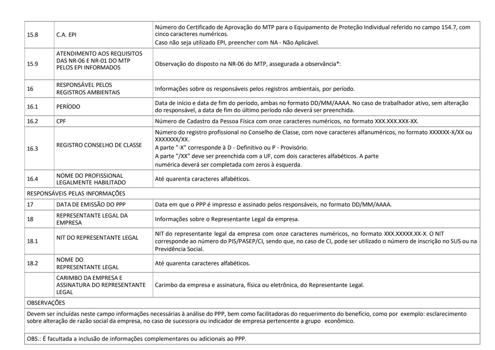
Preenchimento do PPP
PDF · p. 27OBSERVAÇÕES:
1. o Perfil Profissiográfico Previdenciário - PPP, descrevendo o detalhamento, nos campos protegidos, das atividades desenvolvidas e dos dados do profissional que
emitiram o LTCAT;
2. Incluir os períodos relacionados ao Tempo de Serviço em condições especiais, devendo o documento ser assinado pelo dirigente da Unidade.
Ver página original — tabelas, imagens e diagramas
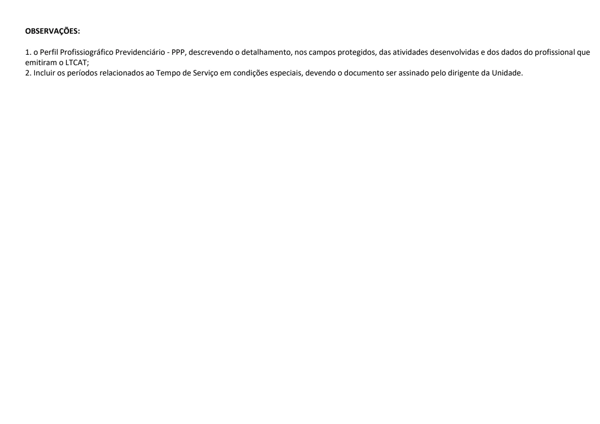
Inclusão no AFD
PDF · p. 28INCLUSÃO DO PROCESSO NO ASSENTAMENTO FUNCIONAL DIGITAL (AFD)
ATO ADMINISTRATIVO (DAP) DE CONVERSÃO DO TEMPO ESPECIAL
(PORTARIA DE CONVERSÃO)
MINISTÉRIO DA DEFESA
EXÉRCITO BRASILEIRO
DIRETORIA DE ASSISTÊNCIA AO PESSOAL
DIRETORIA DONA ROSA DA FONSECA
PORTARIA-DAP/DGP/C Ex Nº XX, DE XX DE DEZEMBRO DE 20XX
EB: XXXXXXXXXXXXXXX
Conversão de Tempo de Serviço
O DIRETOR DE ASSISTÊNCIA AO PESSOAL, no uso da competência que lhe foi subdelegada pelo
Chefe do Departamento-Geral do Pessoal, por meio da Portaria - DGP/C Ex nº 458, de 10 de agosto de 2023,
alterada pela Portaria - DGP/C Ex nº 500, de 13 de junho de 2024, e, considerando a Portaria SGP/SEDGG/ME
nº 10.360, de 6 de dezembro de 2022, Portaria MTP nº 1.467, de 02 junho de 2022. Cumprimento da Decisão
Judicial, processo nº NUP: XXXXXXXXXXXX (REF. XXXXXXXXXX), com o Parecer da Força Executória
n.XXXX/2024/CORESENE/PRU4R/PGU/AGU e o DIEx nº XXX-AAAJSC.2/AAAJ/DAP, de 20 de dezembro de 2024,
resolve
CONVERTER
os períodos exercidos sob condições especiais em tempo comum do Servidor XXXXXXXXXXXX, matrícula SIAPE
nº XXXXXXX, ocupante do cargo Artífice de Eletricidade e Comunicações, lotado no 1º Batalhão Ferroviário, de
acordo com fator de conversão de 1,4 (um vírgula quatro), descriminados abaixo
PERÍODO TEMPO COMUM EM DIAS TEMPO CONVERTIDO EM DIAS
De xº MAR 1991 a 9 JUL 2000 X XX
PERÍODO TEMPO COMUM EM DIAS TEMPO CONVERTIDO EM DIAS
De XX OUT 2000 a 12 NOV 2019 XX XX
Gen Bda XXXXXXXXXXXXXXXX
Diretor de Assistência ao Pessoal
OBSERVAÇÕES:
1. Conferir disponbilização da Portaria de conversão de tempo especial em comum no módulo de
Assentamento Funcional Digital (AFD).
Ver página original — tabelas, imagens e diagramas
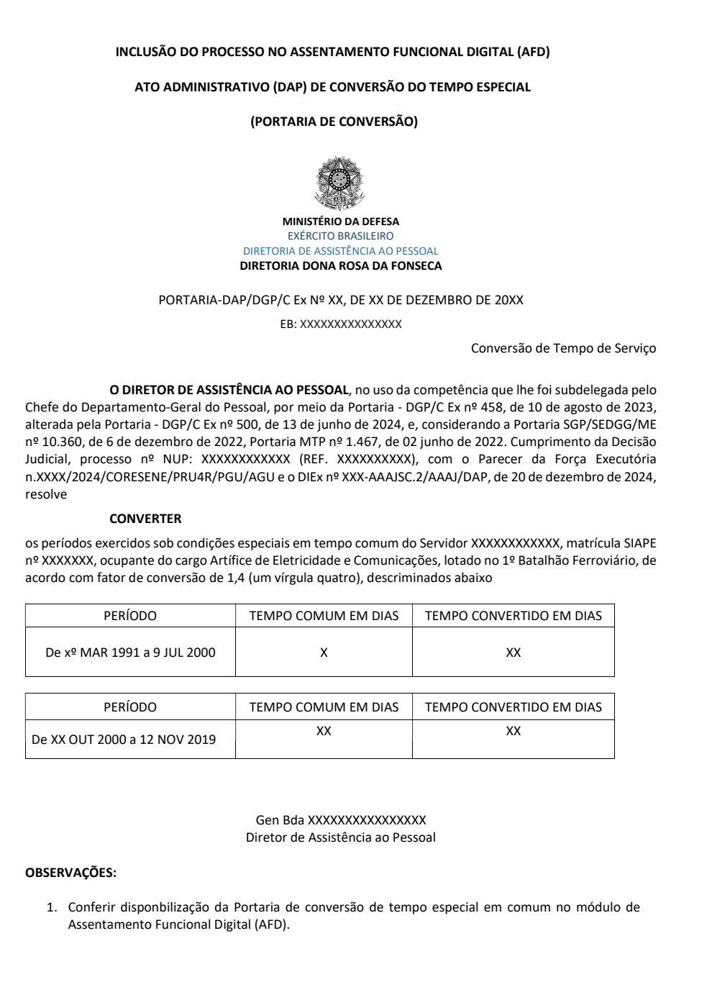
Inclusão no AFD
PDF · p. 29Acessar ao módulo Assentamento Funcional Digital (AFD) do Sistema de Gestão de Pessoas
1. Link para acesso ao sistema AFD no Portal do Servidor (https://www.gov.br/servidor/pt-br/acesso-a-
informacao/gestao-de-pessoas).
2. Acessar o ícone “SIGEPE AFD”.
3. Pesquisar o nome do Servidor impactado.
Ver página original — tabelas, imagens e diagramas
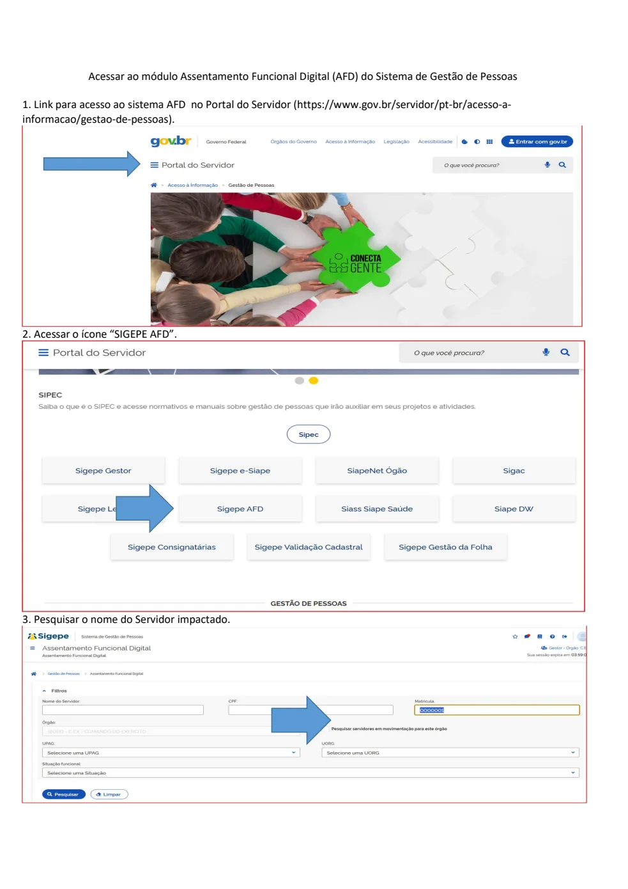
Inclusão no AFD
PDF · p. 304. Incluir o Processo no AFD do servidor.
5. Pesquisar o assunto do processo de averbação de tempo de serviço/contribuição e publicar.
6. Pesquisar o assunto do processo de conversão de tempo de serviço/contribuição e publicar.
Ver página original — tabelas, imagens e diagramas
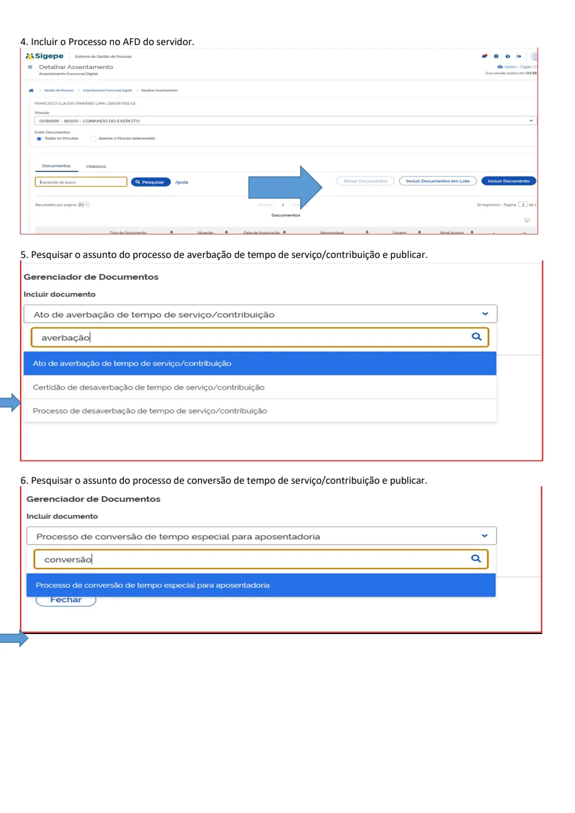